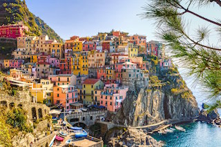
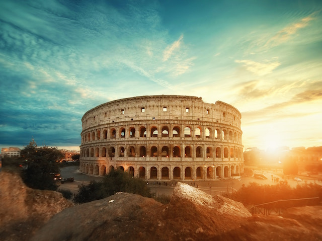
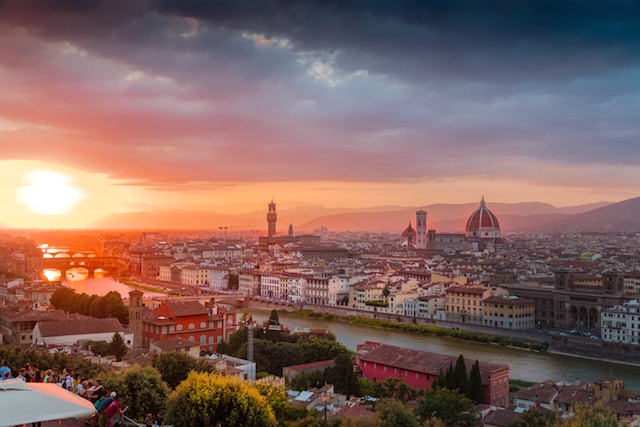
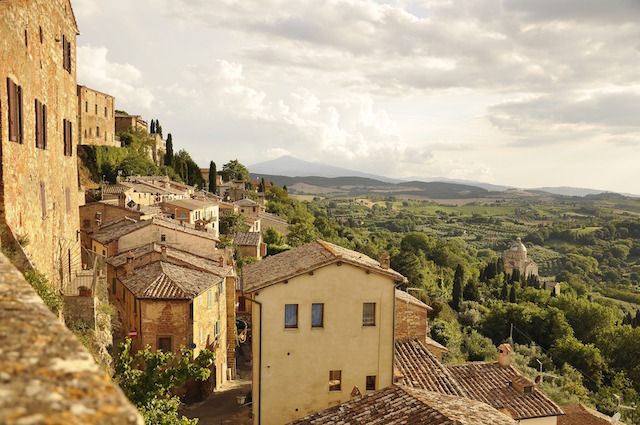
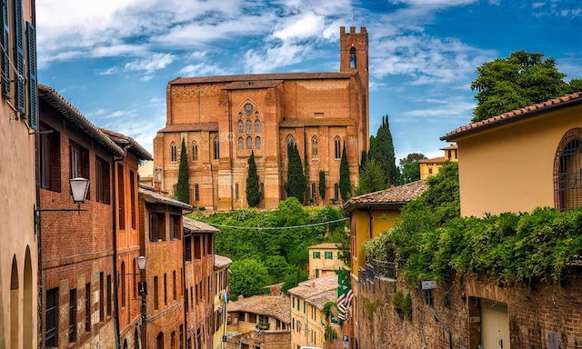

Ciao!
About Italy
Although I visited Italy back when I was 12 years old, I plan on this being my first destination once I graduate college and begin my travel adventures. One of the reasons is due to the fact that Italy has more masterpieces per square mile than any other country and it's the fifth most visited country in the world, welcoming over 45 million visitors annually! The second reason being that unsurprisingly, Italy is the world's largest exporter of wine- and hey, who doesn't like wine. Italy surrounds two of the world’s smallest countries. These are San Marino in Northern Italy, which is also the oldest republic in the world and Vatican City in Rome, the smallest country in the world. Did you know that the colors of the Italian flag have a special meaning? Green represents hope, white represents faith, and red represents charity.
Best Places to Visit in Italy
1. Rome
Read More: The Perfect Itinerary for Your First Visit 2. Florence
Read More: 10 Things to do on Your First Visit to Florence 3. Tuscany
Read More: Touring the Hill Towns of Tuscany, Italy 4. Siena
Read More: Explore the Perfect Day in Siena, Italy Typical Italian Food
- Lasagna: Pasta dish with tomatoes, mozzarella cheese, and mince meat filling.
- Pesto: Thick green sauce with olives, herbs and olive oil, pine kernels and parmiggiano cheese.
- Pizza: The most famous Italian dish, and it was invented in Napoli/Naples around 1860.
- Calzone: Folded up pizza bread filled with tomatoes, ham, cheese and all kinds of filling.